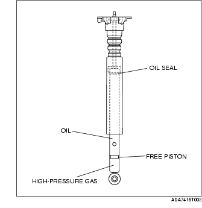

Rear shock absorber construction
• A mono-tube shock absorber, which has a high degree of tuning flexibility and excellent damping characteristics such as response, has been adopted. Due to this, handling stability and ride comfort have been improved.
• The adoption of a chamber filled with pressurized gas and separated by a free piston improves the cooling performance of the oil and prevents cavitation, thereby constantly providing a stable damping force.
